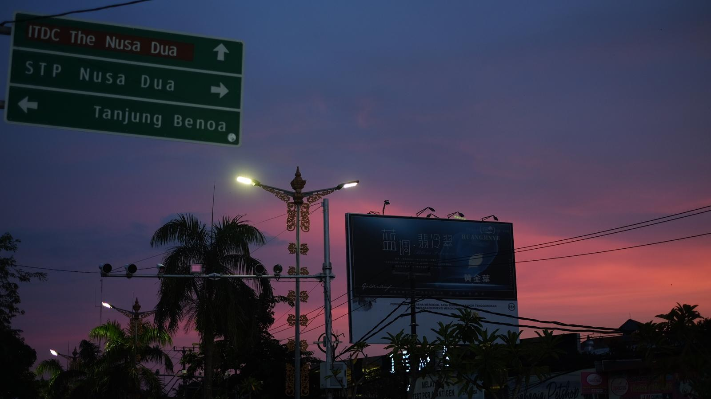
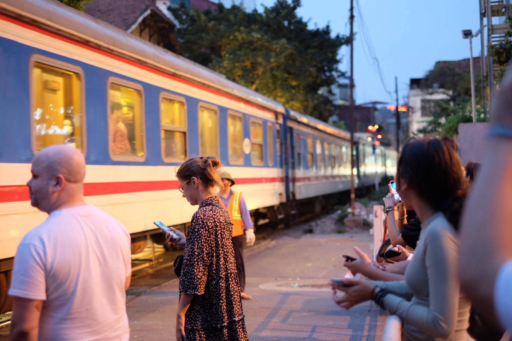
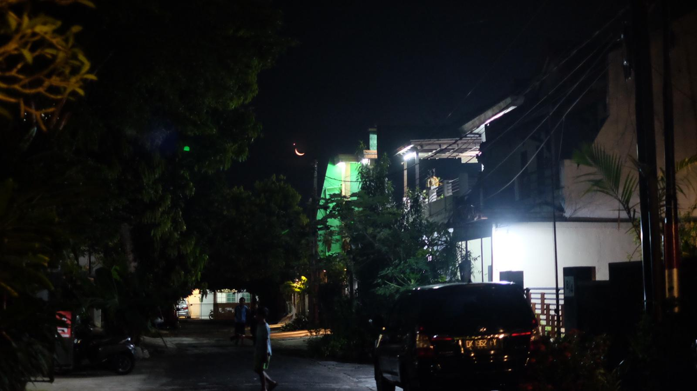
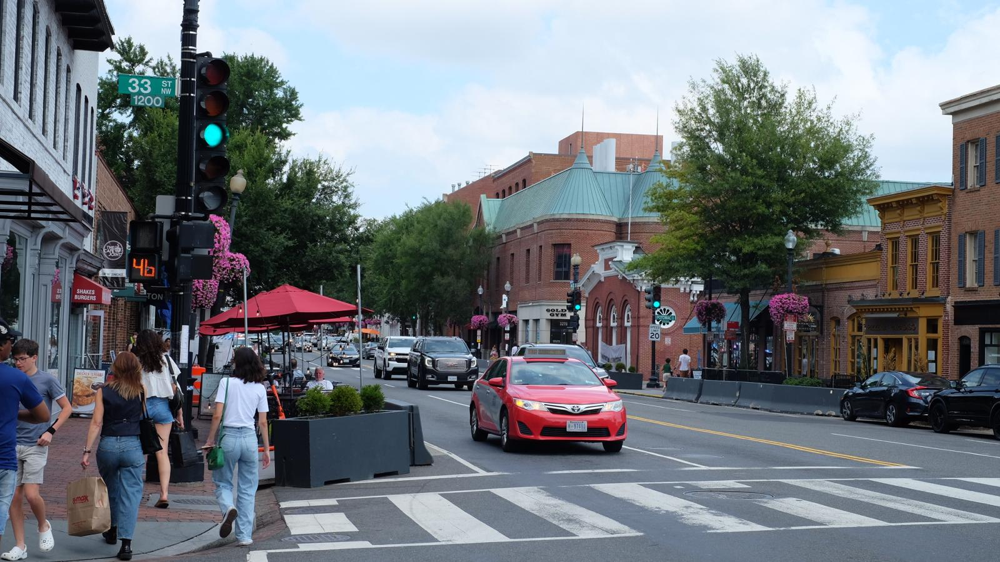
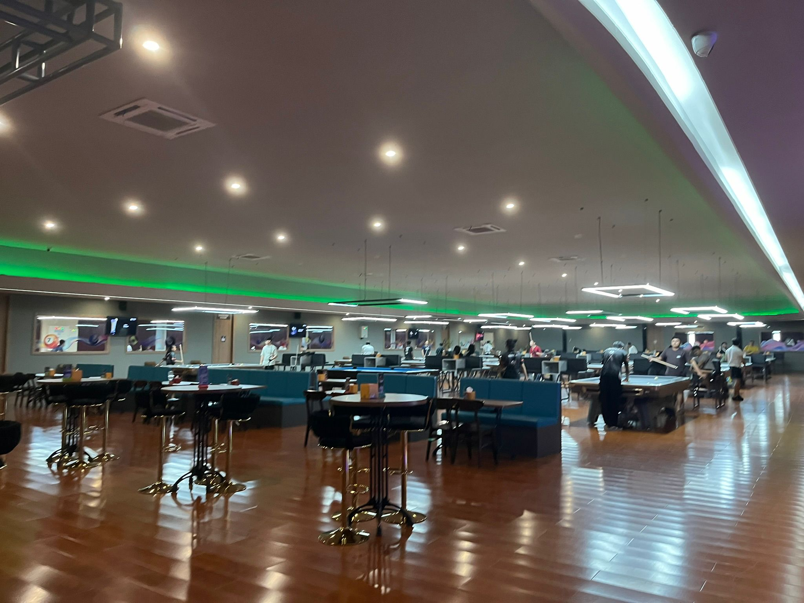
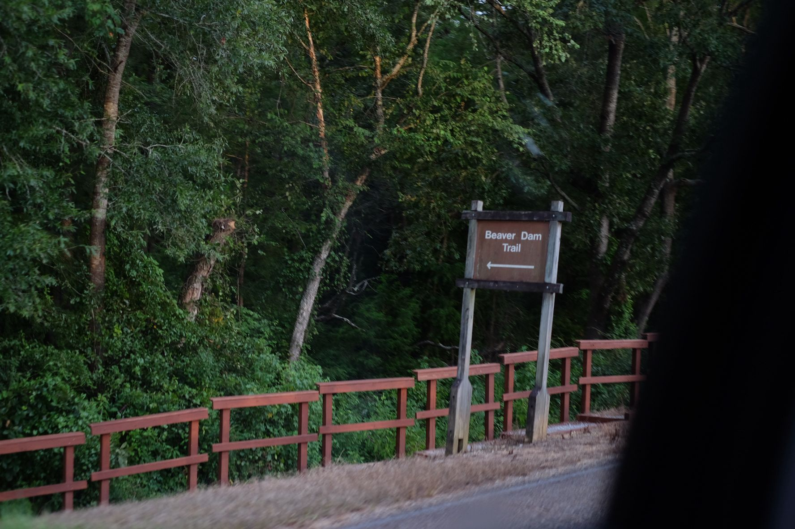

Man does not step into the same river twice.




positiviity


silent archives:
→ Books – bookshelf.
→ Media – cinematogrpahy; music; art; poetry.
→ Quotes – inspirational. stamped ideas and
abstracts:
→ Concepts – economics, philosophy, and
math.
→ Interior design - appreiation of beauty.
newsletter:
→ My Newsletter – future
predictions, status quo.
in company:
→ Conversation – people are wonderful
2007 August 15
Reach me